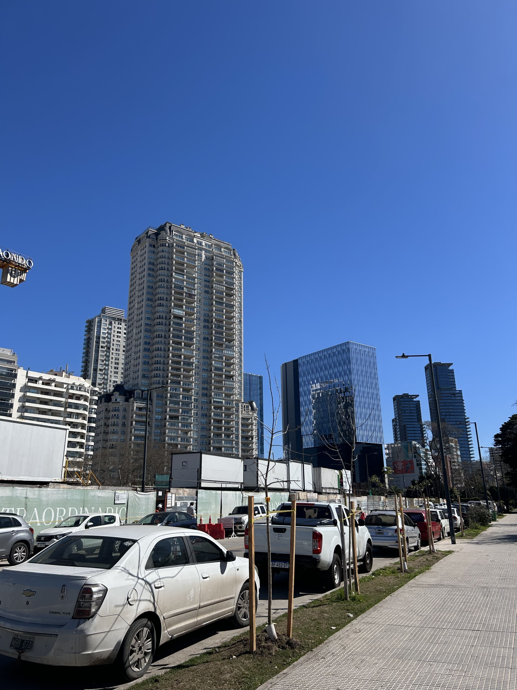
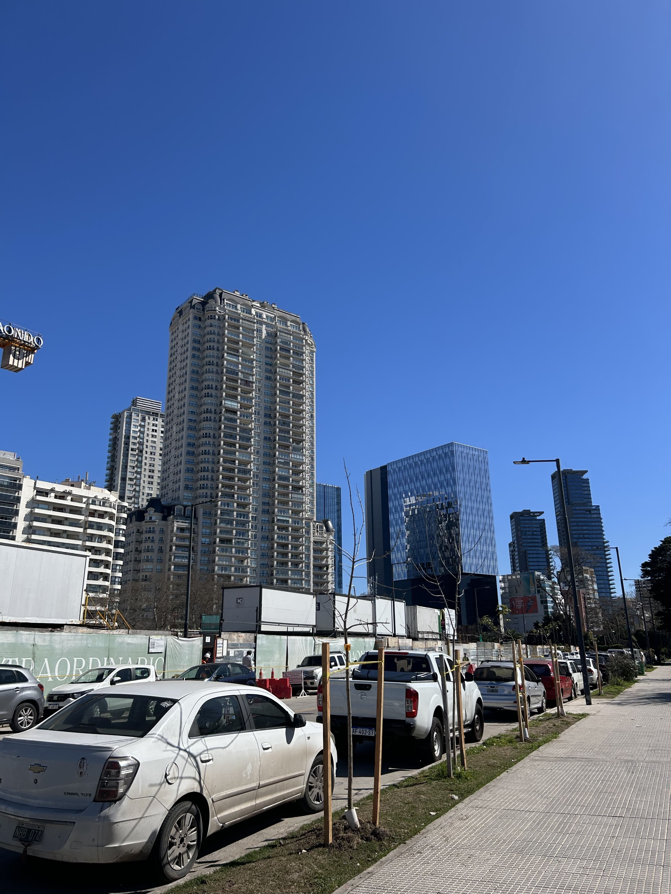
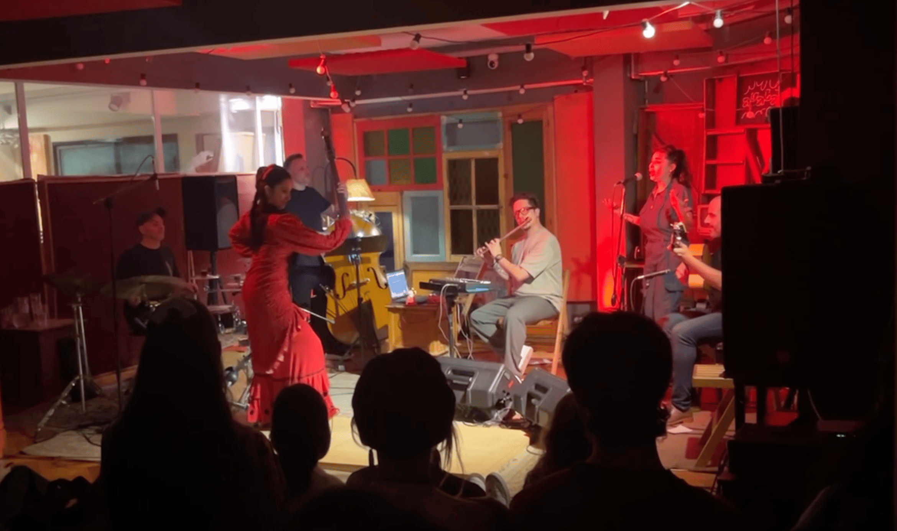
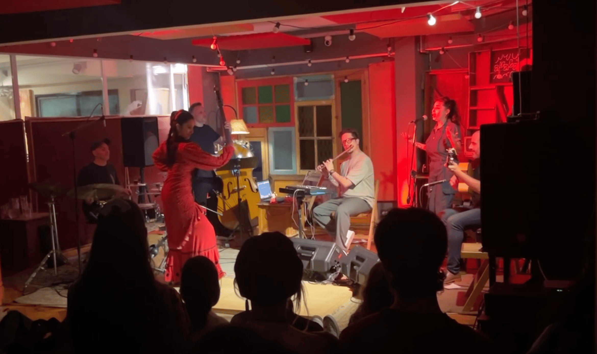

Memorias Imborrables del Intercambio
Más que un diario de viaje, esta es mi colección de recuerdos imborrables y experiencias que jamás olvidaré. Aquí encontrarán la esencia de mi intercambio: fotos auténticas, reflexiones honestas y mis opiniones sobre los lugares y actividades que hicieron de esta la mejor aventura de mi vida. ¡Un camino lleno de momentos hermosos y únicos!
Los lugares a los que fui
Tuve la oportunidad de explorar la capital de punta a punta, navegando por cada rincón de Buenos Aires. Lo mejor fue expandir la ruta hacia el norte del país, donde realicé un recorrido inolvidable por Salta. Allí, entre las Salinas Grandes y la belleza de Cafayate, me encontré con paisajes imponentes y conocí personas hermosas que hicieron esta aventura aún más especial.
Buenos Aires
La ciudad que te acoge con su gente, te transforma con su cultura vibrante y te regala la mejor experiencia de vida
Salinas
La extensión blanca que a 4.000 metros de altura, parece un paisaje irreal sacado de una película.
Cafayate
El rincón que combina "Radiator Springs" argentino con el sabor inolvidable de sus vinos.
el rosedal
El cielo azul
 


Nempla
 
